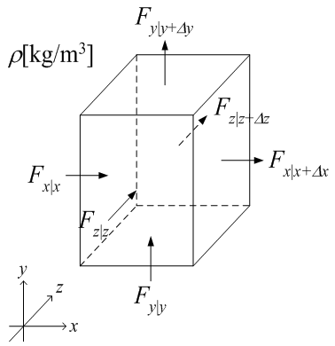

広告
質量収支式
下図の様な微小領域に流入・流出する質量の収支を取る。

Fx, Fy, Fz[kg/s] は質量流量である。微小領域への流入・流出量は、それぞれ次式となる。
x軸方向
\[
\begin{aligned}
F_{x|x}&=\rho\Delta y\Delta z\,v_{x|x}\\
F_{x|x+\Delta x}&=-\rho\Delta y\Delta z\,v_{x|x+\Delta x}
\end{aligned}
\]
y軸方向
\[
\begin{aligned}
F_{y|y}&=\rho\Delta z\Delta x\,v_{y|y}\\
F_{y|y+\Delta y}&=-\rho\Delta z\Delta x\,v_{y|y+\Delta y}
\end{aligned}
\]
z軸方向
\[
\begin{aligned}
F_{z|z}&=\rho\Delta x\Delta y\,v_{z|z}\\
F_{z|z+\Delta z}&=-\rho\Delta x\Delta y\,v_{z|z+\Delta z}
\end{aligned}
\]
収支式は、次式となる。
\[
\begin{aligned}
\Delta x\Delta y\Delta z
\frac{\rho_{t|t+\Delta t}-\rho_{t|t}}{\Delta t}
&=F_{z|z+\Delta z}+F_{z|z}\\
&\quad+F_{y|y+\Delta y}+F_{y|y}\\
&\quad+F_{z|z+\Delta z}+F_{z|z+\Delta z}\\
&=-\rho\Delta y\Delta z\,v_{x|x+\Delta x}
+\rho\Delta y\Delta z\,v_{x|x}\\
&\quad-\rho\Delta z\Delta x\,v_{y|y+\Delta y}
+\rho\Delta z\Delta x\,v_{y|y}\\
&\quad-\rho\Delta x\Delta y\,v_{z|z+\Delta z}
+\rho\Delta x\Delta y\,v_{z|z}
\end{aligned}
\]
両辺をDx D y D z で割って、
\[
\frac{\rho_{t|t+\Delta t}-\rho_{t|t}}{\Delta t}
=
-\frac{\rho v_{x|x+\Delta x}-\rho v_{x|x}}{\Delta x}
-\frac{\rho v_{y|y+\Delta y}-\rho v_{y|y}}{\Delta y}
-\frac{\rho v_{z|z+\Delta z}-\rho v_{z|z}}{\Delta z}
\]
D t , D x , D y , D z → 0とすると
\[
\frac{\partial\rho}{\partial t}
=
-\frac{\partial(\rho v_x)}{\partial x}
-\frac{\partial(\rho v_y)}{\partial y}
-\frac{\partial(\rho v_z)}{\partial z}
\]
右辺を展開すると
\[
\frac{\partial\rho}{\partial t}
+v_x\frac{\partial\rho}{\partial x}
+v_y\frac{\partial\rho}{\partial y}
+v_z\frac{\partial\rho}{\partial z}
=
-\rho\left(
\frac{\partial v_x}{\partial x}
+\frac{\partial v_y}{\partial y}
+\frac{\partial v_z}{\partial z}
\right)
\]
ベクトル表示すると
\[
\frac{D\rho}{Dt}
=
-\rho(\nabla\cdot\vec v)
\]
ここで、D/Dtは全微分作用素で
\[
\frac{D}{Dt}
=
\frac{\partial}{\partial t}
+
(\vec v\cdot\nabla)
\]
| prev | | | up | | | next |